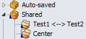

Partage de sessions


|
Partage de sessions |
|
|
Plusieurs utilisateurs peuvent partager des sessions en utilisant un fichier de sessions partagées. Pour créer un fichier de sessions partagées
Pour accéder à un fichier de sessions partagées
Les sessions partagées apparaîtront alors comme une nouvelle branche dans l'arbre des Sessions : 
Notez que les sessions partagées sont en lecture seule et ne peuvent pas être modifiées dans Beyond Compare. Pour modifier des sessions partagées, vous avez besoin de recréer le fichier package comme décrit ci-dessus. |